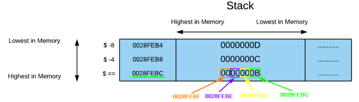

Endianness
Endianness is the way of representing (storing) values in memory
Types of Endianness:
•
big-endian ◇ the MSB(most significant byte) in a
big-endian is at the lowest memory address
◇ the LSB(least significant byte) in a
big-endian is at the highest memory address
example: number 0x12345678
| | Address in memory | Byte value |
|---|
| Lowest in memory | +0 | 0x12 |
| | +1 | 0x34 |
| | +2 | 0x56 |
| Highest in memory | +3 | 0x78 |
•
little-endian ◇ the MSB(most significant byte) in a
little-endian is at the highest memory address
◇ the LSB(least significant byte) in a
little-endian is at the lowest memory address
example: number 0x12345678
| | Address in memory | Byte value |
|---|
| Lowest in memory | +0 | 0x78 |
| | +1 | 0x56 |
| | +2 | 0x34 |
| Highest in memory | +3 | 0x12 |
The values in x86 CPUs are stored in
little-endian
example: 11 in decimal → 000000
0B in hexadecimal
How little-endian is written in memory first the
lowest in memory (less significant) and then the
highest in memory (most significant)
How little-endian is read from memory first the
highest in memory (most significant) and then the
lowest in memory (less significant)
{kind=link}